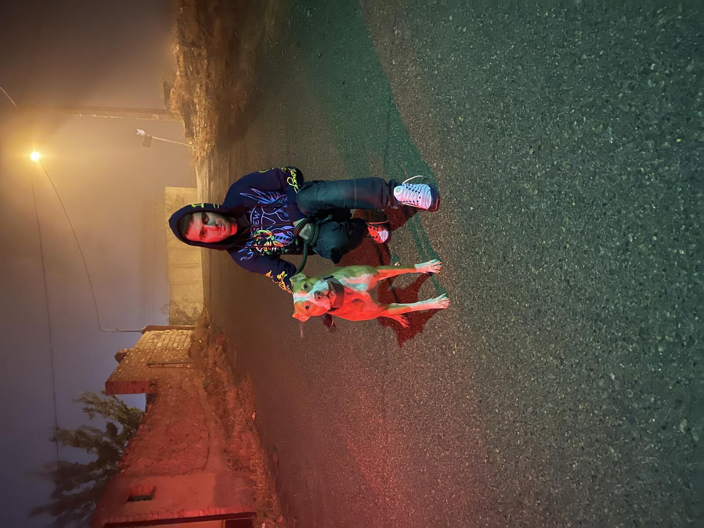
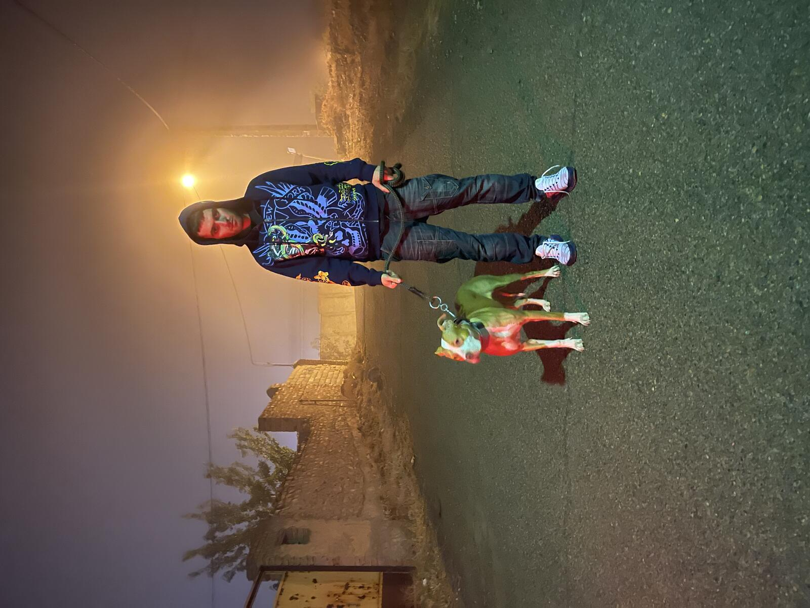
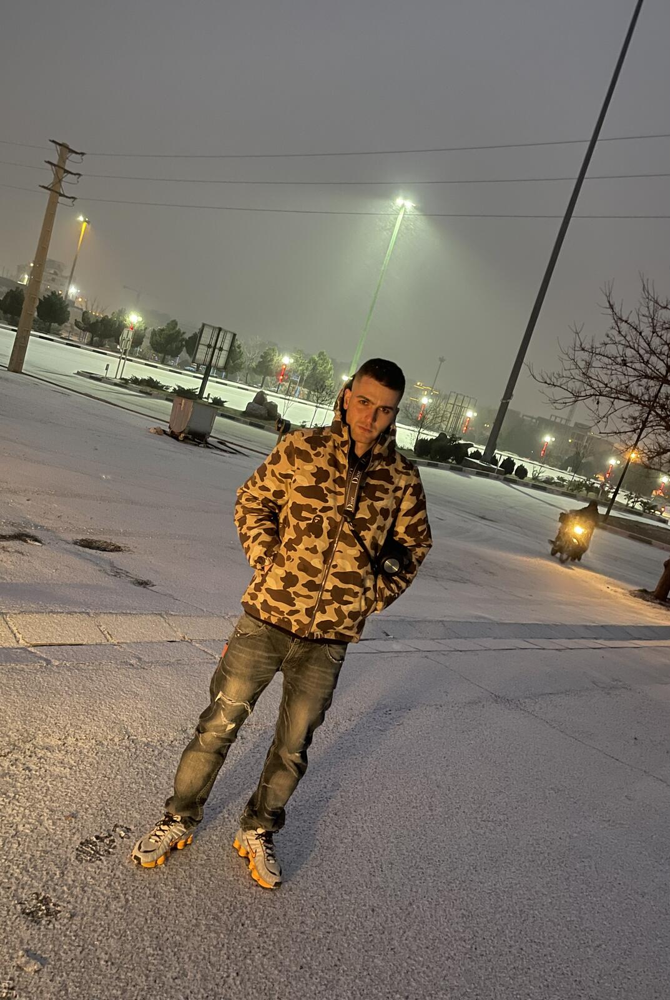
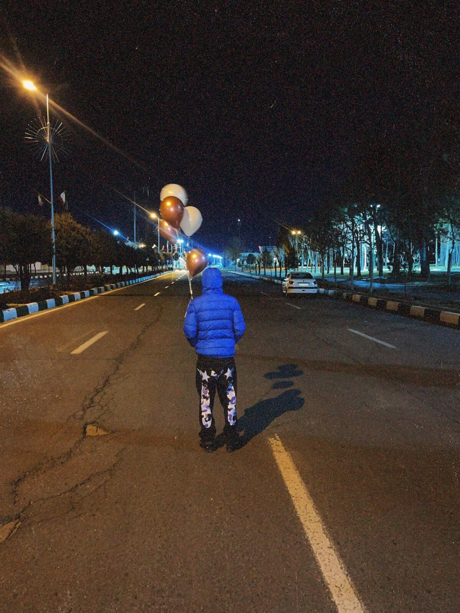
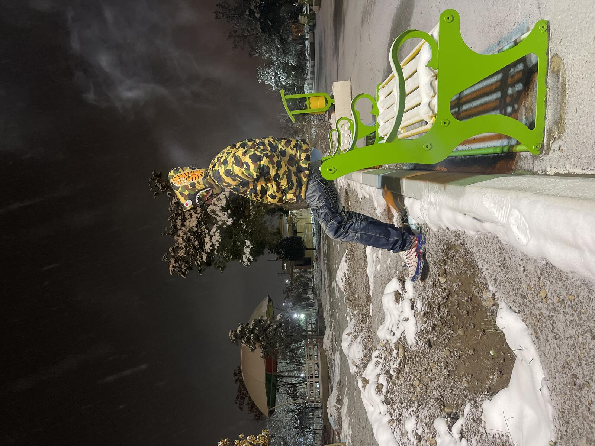

یادبود کسری
«کسری رستمخانی»؛ نه فقط یک یادِ گذرا، که طنینِ بغضی عمیق بر جانِ نسلی است که در میانِ طوفانهای خاموش و سایههای سنگینِ زمانه قد کشید و شاهدی بر آرزوهایِ بربادرفتهی خویش بود.
کسری در ۳۱ سالگی، در اوجِ جوانی و خرد، آمیزهای از هوش، هنر، زیبایی و مهربانی بود؛ روحِ بیقراری که در چنبرهیِ ناهمواریها و محدودیتهایِ آشکار و نهانِ این روزگار، فرصتی شایسته برای پرواز و درخشش نیافت. قصهی کسری، روایتی است تلخ اما واقعی از استعدادهای درخشانی که در اتمسفرِ رخوت و بیافقیِ یک عصر، پیش از آنکه به بار بنشینند، در سوگِ آرزوهایشان نشستند.
حقیقت این است که در این جغرافیا، سالهاست که سنگینیِ یک انسدادِ ناخواسته بر گردهی جوانان سنگینی میکند؛ واقعهای که میکوشد شورِ حقیقتجویی و پرواز را به روزمرگی و خاموشی بکشاند. ما سرمایههایی بودیم که بالهایمان در مواجهه با دیوارهایِ بیانعطافِ روزگار خسته شد.
کوچِ کسری، فریادی خاموش است در گوشِ زمانهای که قامتِ آرزوها را کوتاه میخواهد. اما ما باور داریم که هیچ زمستانِ طولانی و هیچ غبارِ سنگینی نمیتواند نغمهی هنر و حقیقتِ وجودیِ او را برای همیشه خاموش کند. یادِ او، جرقهای است در دلِ تاریکی، که فردا را گواهی میدهد.
آسوده بخواب، کسری؛ که نام و یادِ تو، گواهی است بر رنجها و آرزوهایِ نسلی که تا طلوعِ دوبارهیِ روشنایی و دادگری، یادِ تو را در سینه زنده نگه خواهد داشت.
زندگینامه
کسری رستمخانی، جوانی نبود که در خلأ متولد شود؛ او محصولِ نسلی بود که با کولهباری از هوش، استعداد و شورِ زندگی، در میانه دههی ۷۰ خورشیدی چشم به جهان گشود تا شاهدِ روزگارِ سخت و پُرمرارتِ جامعهاش باشد. او در ۳۱ سال زندگیاش، مسیری را طی کرد که نه با انتخابهایِ آزادانهیِ شخصی، بلکه با «محدودیتهایِ تحمیلی»، «جبرِ روزگار» و «تنهاییِ ساختاریافته» سنگفرش شده بود.
کسری در سالهایِ رشد و نوجوانی، پسری بود که همه او را با شاخصههایی چون هوشِ سرشار، زیباییِ رفتاری، روحیهیِ بخشنده و مهربانیِ بیکلامش میشناختند. اما نباید داستانِ او را فقط به پاکی یا سادگیاش تقلیل داد. حقیقت این است که هر کس دیگری هم اگر در جایگاهِ او، با همان حجم از پیچیدگیها، فشارها و گرفتاریها قرار میرفت، ممکن بود در برابرِ سنگینیِ بارِ این جاده فرسوده شود. هیچکدام از ما از این چرخه مصون نیستیم؛ کسری نه ضعفی داشت و نه نگاهش به دنیا سادهلوحانه بود، بلکه در موقعیتی قرار گرفت که بدشانسی، جبرِ محیطی و دستِ ناهمراهِ تصادفات، مسیر را بیش از حد برایش ناهموار ساخت.
وقتی کسری به دورانِ جوانی و اوجِ توانمندیِ فکری رسید، با حقیقتی بسیار تلخ و سنگین مواجه شد: دیوارهایی بلند که دور تا دورِ هستیاش کشیده شده بود. او در دنیایی زندگی میکرد که سیستمِ حکمرانیاش، به جایِ توسعه و پرواز دادن به نخبگان، «کنترل» و «سرکوبِ انگیزهها» را انتخاب کرده بود؛ ساختاری که در آن، جوانِ باهوش و بااحساسی مثل کسری، یا باید «ساکت و بیتفاوت» میشد، یا در میانِ چرخدندهها «مستحیل» میگشت.
اما تلخیِ داستانِ کسری به همینجا ختم نمیشود. جامعهای که کسری در آن نفس میکشید، تحتِ فشارِ مداوم، دچارِ یک فرسایشِ عمیقِ اخلاقی و انسانی شده بود. در کشوری که زیستن در آن به مسابقهای دائمی برایِ «بقا» تبدیل شده، تفکر، عقلانیت، و از همه مهمتر حسِ همدردی و انسانیت به مرور رخت برمیبندد. در چنین فضایی، آدمها — حتی آنان که نامِ دوست و همراه را یدک میکشند — خودخواه و بیتفاوت میشوند؛ نه الزاماً از سرِ سوءنیت، بلکه به این دلیل که جامعهای بیمار، فرصت و توانِ فکر کردن به دیگری را از افرادش سلب میکند.
در ساختاری که همه فقط به فکرِ حفظِ خویشتناند، کسری آرامآرام تنها و بیتکیهگاه رها شد. اطرافیان و کسانی که روزی در کنارش بودند، خود به بخشی از این بیتفاوتیِ مسری تبدیل شدند. آنها ندیدند — یا به دلیلِ ناآگاهی و خستگیِ ناشی از وضعیتِ جامعه نخواستند ببینند — که یک روحِ حساس چطور در میانِ جمع، بارِ رنجها و بدبیاریهایش را به تنهایی بر دوش میکشد. بیتفاوتیِ نزدیکان، محصولِ همان کشوری بود که در آن عاطفه و مسئولیتپذیری جایِ خود را به عافیتطلبی و خودخواهی داده است.
شما که در حالِ خواندنِ این متنید، لحظهای دست نگه دارید... چشم از این کلمات بردارید و فقط برای یک لحظه، بدون هیچ نقاب و توجیهی، با حقیقتِ خلوتِ خودتان روبهرو شوید: کسری هیچگاه دستِ رد به سینهی کسی نزد؛ همیشه بیدریغ بود و بیچرتکهانداختن. اما صادقانه از خود بپرسید: آیا ما هم همانقدر برایش بودیم؟ حقیقتِ تلخ و عریان این است که ما خودخواه بودیم. ما در دنیایِ کوچک، پیلهیِ امن و خودخواهیهایِ روزمرهمان غرق شده بودیم. هر جا به او نیاز داشتیم روی شانههایش حساب کردیم، اما هر جا که او زیرِ بارِ سنگینِ گرفتاریها، بدبیاریها و تنهاییِ جانکاهش فرسوده میشد، عافیتطلبانه عقب کشیدیم. خودمان را گول زدیم؛ گفتیم «کسری خودش محکم است»، «دیگران هستند»، «حالا وقت هست». ما خودخواهی و بیمسئولیتیِ محضِ خودمان را پشتِ این جملات پنهان کردیم تا آرامشِ زندگیِ شخصیمان به هم نخورد. نجات دادنِ کسری نه معجزه میخواست و نه شقالقمر؛ فقط کافی بود برای یک بار، فقط یک بار از دایرهیِ خودخواهیمان بیرون بیاییم. یک تماسِ بیدلیل، یک «حواسم بهت هست»ِ واقعی، یا فقط شنیدنِ دردهایش بدونِ قضاوت و چرتکهانداختن. حالا که کسری نیست، با این حقیقتِ سهمگین چه میکنید؟ با این کابوس که بفهمید میتوانستید با ذرهای کمتر خودخواه بودن، با یک قدمِ ساده، راهی برایِ نجاتش باشید اما خودخواهیتان دستوبالتان را بست. این یک غفلتِ ساده نبود؛ یک اشتباهِ بزرگ، سهمگین و جبرانناپذیر بود که مرتکب شدیم. ما کسی را که همیشه برایمان بود، دقیقاً در جایی که به ما نیاز داشت، با تمامِ خودخواهیمان تنها گذاشتیم تا خرد شود... و این تاوانِ سنگینی است که تا ابد بر دوشِ وجدانِ تکتکِ ما باقی خواهد ماند.
کسری در ۳۱ سالگی، در حالی که باید در اوجِ شکوفایی و خلق کردن میبود، خود را در تقابلِ همزمان با یک «ساختارِ سرکوبگر»، یک «جامعهیِ فرسوده و بیتفاوت» و زنجیرهای از «بدشانسیهایِ ناخواسته» یافت. پایانِ زندگیِ کسری، یک اتفاقِ ساده یا تصمیمی جدا از بسترِ زمانه نبود؛ بلکه حاصلِ ضربِ یک «سیستمِ ناکارآمد» و «سقوطِ حسِ همدردی و عقلانیت در جامعه» در «تنهایی و بدبیاریهایِ محیطی» بود. کشوری که نخبگانش را میراند و جامعهای که تحتِ فشار، قدرتمندتر از همیشه دیوارهایِ خودخواهی را دورِ خود میکشد، طبیعتاً خروجیاش از دست رفتنِ انسانهایِ نایابی چون کسری است.
او رفت، اما داستانِ زندگیاش یک سندِ زنده و بیدارکننده است؛ سندی از این که چطور یک جامعهیِ بحرانزده، با سلبِ انسانیت و همدردی از آدمهایش، حتی دوستان را هم در برابرِ رنجِ یکدیگر نابینا و خودخواه میکند. کسری نمادِ آن استعداد، محبت و ظرفیتی است که در ناعدالتیِ زمانه و خودخواهیِ حاصل از یک جامعهیِ خسته هدر رفت. یادِ او اکنون آیینهای است سنگین؛ هم برایِ دیدنِ چهرهیِ بیرحمِ سیستمی که نسلِ ما را حیفومیل میکند، و هم برایِ یادآوریِ این که فرار از انسانیت و غرق شدن در خودخواهی، چطور میتواند زندگیِ عزیزترینهایمان را به انزوا و پایان بکشاند.
آهنگها
مجموعه آثار موسیقیایی کسری را اینجا بشنوید و دانلود کنید.
موسیقی
۱ از ۱
لیست پخش
گالری تصاویر
لحظات زیبا و خاطرات فراموشنشدنی
دفترچه یادبود
آخرین خاطره یا جملهای که از کسری یادتان هست بنویسید.
● پیامهای ثبت شده
هر بار که یادش میکنید، میتوانید دوباره شمعی روشن کنید.